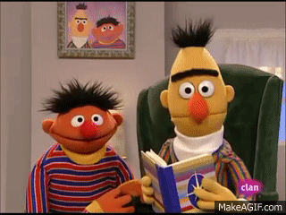
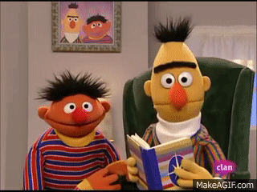
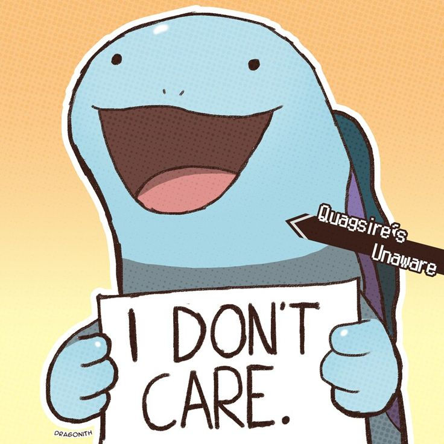

El Monstruo de las Galletas (Triki)
Su nombre real no se reveló
hasta 2004 en una canción
Se llama Sid. Y es conocido por su apetito insaciable
(Susurro: ¡Pero no se lo digas a las galletas!)


Su nombre real no se reveló
hasta 2004 en una canción
Se llama Sid. Y es conocido por su apetito insaciable
(Susurro: ¡Pero no se lo digas a las galletas!)
Es conocido por referise a sí mismo en tercera persona
Elmo: ¡Elmo ama ese dato!
Su juguete "Elmo Cosquillas" causó histeria
en las tiendas en los 90.
Tiene un alter ego súper torpe llamada Super Coco
un superhéroe que siempre aterriza mal o se confunde
pero insiste en ayudar.
Es el personaje "ordenado y serio".
Su actor/titiritero, Mak Saltzman, ha dicho
que se inspiró en la dinámica de su propia relación de pareja.
 

Es el bromista caótico.
Duerme en una cama individual al lado de la cama de Beto
(pero siguen discutiendo sobre el ruido que hacen por la noche)
Vive en un cubo de basura y siempre está de mal humor
Le molesta todo; su frase típica es
"¡Me molesta todo!"
a veces ayuda aunque nunca lo admite,
odia que le hagan fiestas sorpresas
Ama contar todo lo que ve y siempre ríe.
Colecciona números y monedas, a veces se distrae
contando y se olvida de otras cosas.
Disfruta enseñar
a los demás a contar mientras se divierte
Siempre experimenta con mezclas locas,
a veces revienta espuma por accidente
le gusta cantar mientras cocina, es torpe pero simpático
Presentador y cantande de barrio, le encanta hablar
con todos los personajes. Su canto anima
cualquier situación aburrida. Siempre intenta
que todos se lleven bien.
Es rosa y muy curioso, le gusta aprender cosas nuevas.
Siempre está dispuesto a aayudar a sus amigos, aunque a veces
se esconde y luego asusta a los demás.
Dicen que mi página es básica…
Yo feliz de que al menos funcione.
Cuando he cambiado ya 5 temas
diferentes de página
Yo:

Cuando de tantas ramas de git me pierdo
Yo: ¿Dónde era...?